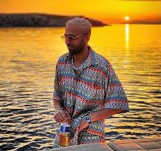

Naps
Best singles
-
Best like
La Kiffance
En détente
Vamos
Sucess Story
De son vrai nom Nabil Boukhobza, Naps naît le 15 février 19866, à Marseille etgrandit dans la cité Air Bel dans le quartier marseillais de LaPomme. Il écrit ses premiers textes de rap à l'âge de 15 ans. Deux ans plus tard, il monte le groupe Click 11.43 avec 2 autres rappeurs dont il ne fait plus partie aujourd'hui. Click 11.43 fondé dans les quartiers nord de la cité phocéenne connaîtra un certain succès local. Il collabore avec des artistes tels que Soolking, Sofiane, YL et Kofs. Actif depuis le milieu des années 2000.il se fait connaître du grand public en 2017 avec son album Pochon bleu.

Follow the link to listen it ! Album Pochon bleu